Comment j’ai créé ma web-série ?
Une odyssée spatiale et créative
Cela fait maintenant près de six ans que je travaille sur un projet de web série. Mêlant images de synthèses et prises de vues réelles, la série dénombre aujourd’hui une demi-dizaine d’épisodes disponibles sur Youtube. Et j’écris cet article car je souhaite évoquer le travail que j’effectue en autodidacte depuis tout ce temps.
UNAI raconte l’histoire de Unai, un enfant renard anthropomorphique et de Keeper, un humain. Tous deux sont à la recherche de l’Homeless, le centre de l’univers.
Mon objectif est de créer une relation père-fils entre les deux personnages. Chaque épisode a pour thématique une émotion, et a pour ambition d’approfondir leur relation. Chacun dure entre trente secondes et deux minutes.
UNAI a été réalisé en mélangeant prises de vues réelles et images de synthèses. Le character design se veut cartoon, pour se rapprocher de l’idée d’un Roger Rabbit.
L’univers est inspiré par le Petit Prince de Saint-Exupéry, mais aussi de Star Wars, Star Fox et Alert Spoiler.
J’ai réalisé ces courts métrages en alliant prise de vue réelles sur fond vert, puis j’ai incrusté mon personnage dans l’environnement 3D créé avec le logiciel Blender et rendu avec le moteur Cycles. J’ai créé beaucoup de versions du personnage de Unai. D’abord pensé comme un robot, puis comme un petit garçon à la peau bleue, je me suis arrêté à la forme d’un renard humanoïde car le rendu du pelage est vraiment intéressant, et permet de rendre le personnage palpable.
Au tout début, UNAI n’était pas une web série, mais une chronique dédiée au jeu vidéo. Je me retrouvais face à une caméra, dans ma chambre, en train de parler de jeu vidéo. L’idée était d’intégrer un personnage en image de synthèse. Une sorte de side-kick qui aurait pour but de faire sourire le public.
A ce moment, nous sommes en 2015, et je commence à me former en autodidacte sous Blender. Et la première chose qui me vient à l’esprit, c’est de donner vie à un object simple du quotidien: un lampe qui serait sur mon bureau et qui me jouerai des mauvais tours.
Hélas, l’idée ne me convient pas. Je revois mon ambition à la hausse en imaginant un enfant en 3D, avec qui je pourrais intérargir librement. Unai est né !
Ici, le personnage est un enfant à la peau bleu. Ses yeux sont blanc car je se veux pas lui faire des yeux à ce moment donné, ne sachant pas encore comment les animer. Les cheveux sont également blanc et la peau réagit différemment à la lumière.
Même si l’idée est bonne, le rendu est trop cringe, pas assez organique. J’abandonne cette idée, mais je veux absolument poursuivre dans cette idée qui consiste à mettre en scène un jeune extraterrestre qui parle avec un jeune humain de jeu vidéo.
J’aime l’idée qui consiste à opposer deux personnages qui n’ont rien en commun, voire qui se detestent, mais qui partagent une même passion.
Je me décide alors à designer une première ébauche d’un personnage qui se rapproche du Unai actuel.
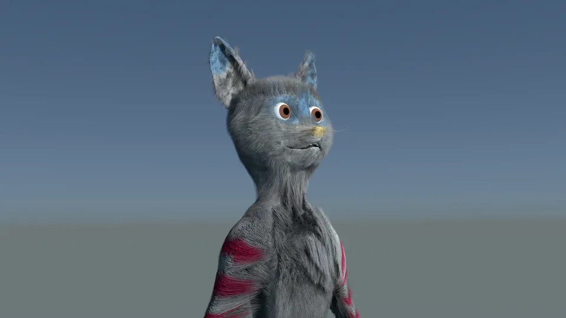 Unai sous forme de personnage poilu daté se septembre 2016 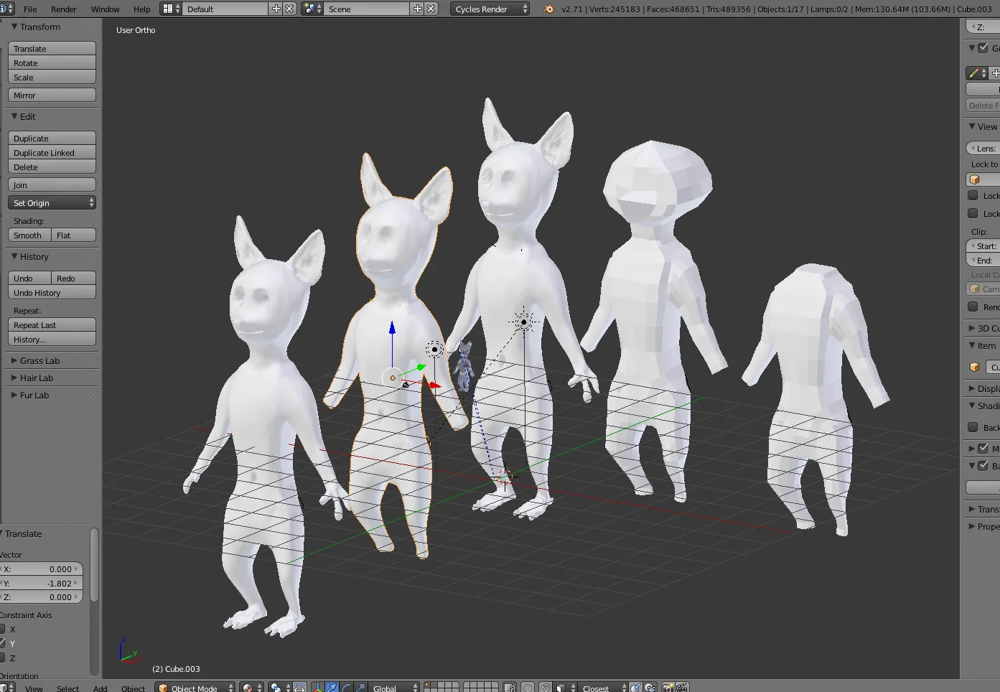 L’évolution de la modélisation du personnageDans cette itération, l’idée était de créer un personnage plus simple. Le douer d’un visage cartoon me permettait alors de faciliter le futur processus d’animation. Et s’éloigner du réalisme me permet alors de décompléxifier son mouvement.
Même si je ne suis pas satisfait par le personnage, je sens que je m’approche du but.
Mais une problématique se pose au niveau de son design. Je vois plus ou moins à quoi le personnage doit ressembler. Mais je n’ai pas d’idée sur la forme de que doit prendre son visage.
N’étant pas suffisamment doué à l’époque avec la modélisation Blender, je choisis de passer par la sculpture sur terre. Même si le résultat n’est pas vraiment à la hauteur, il a le mérite d’affiner ma vision du personnage.
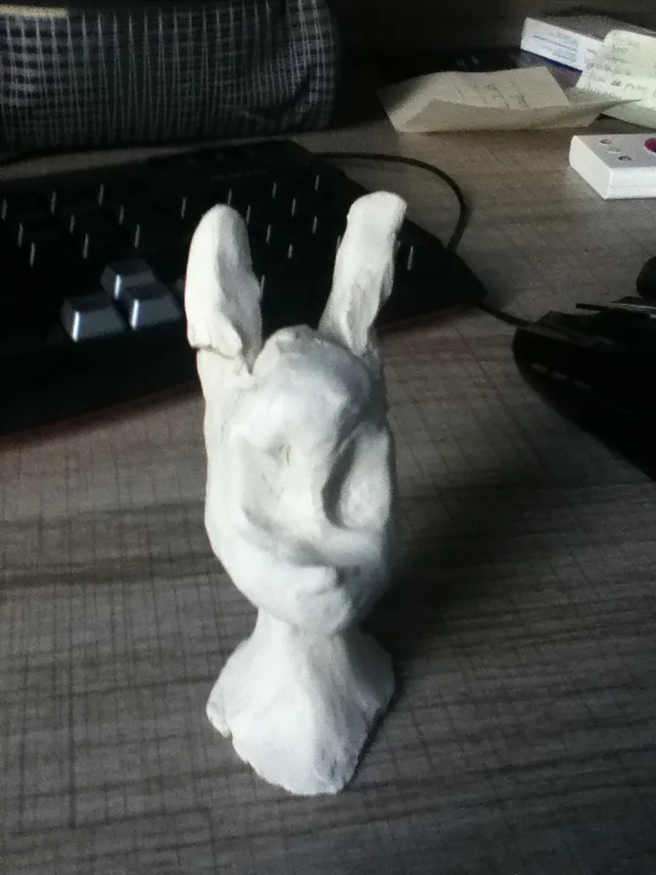 Sculpture du visage de Unai version plus cartoon de face 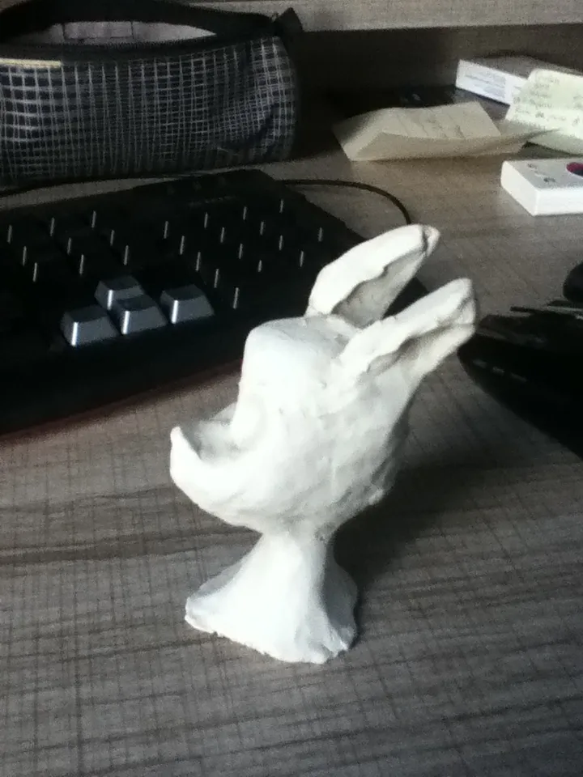 Sculpture du visage de Unai version plus cartoon de profil 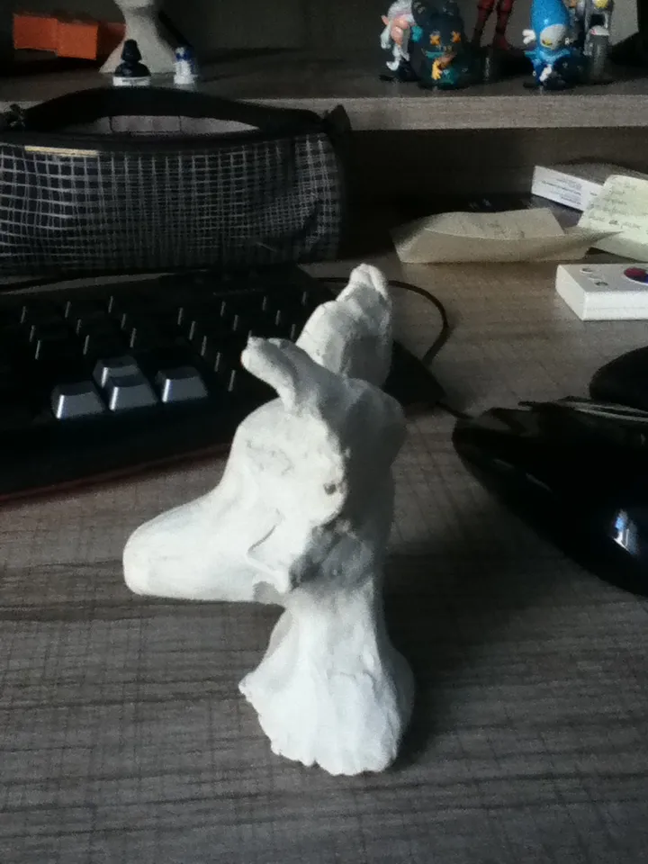 Sculpture du visage de Unai version plus réaliste de profil 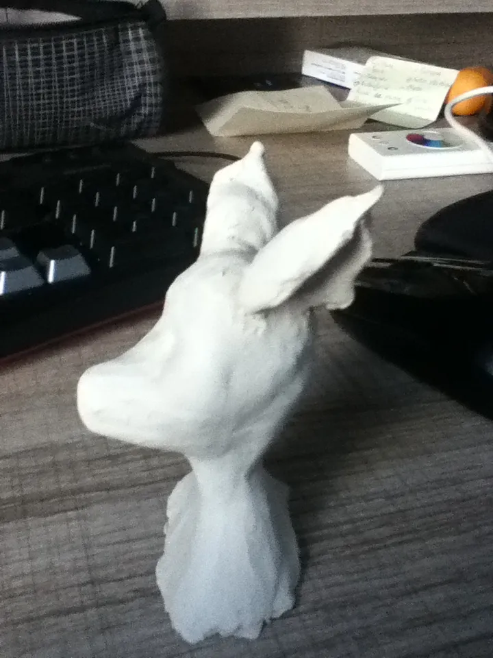 Sculpture du visage de Unai version alternativeA cet instant, je comprends que le personnage devient plus palpable. La terre me permet de le toucher et de mieux visualiser son visage et sa personnalité.
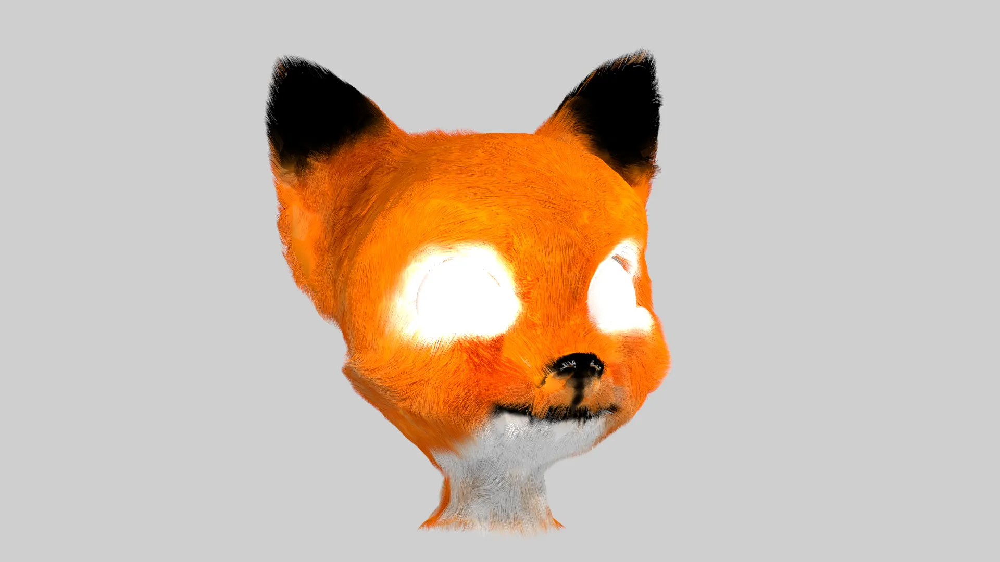 Visage de Unai datant de septembre 2018Le personnage est désormais modélisé. Il m’apparait comme une évidence. Alors que j’hésite entre un pelage blanc et un pelage roux, je me dit que j’ai envie de tester les couleurs d’un renard.
Tout me plait dans ce personnage avec les différents détails sur son pelage rendu avec Cycles, son air optimiste et amusé.
Je vais donc procéder à de multiples prises de vues test tout en imaginant à quoi ressemblerait le premier épisode.
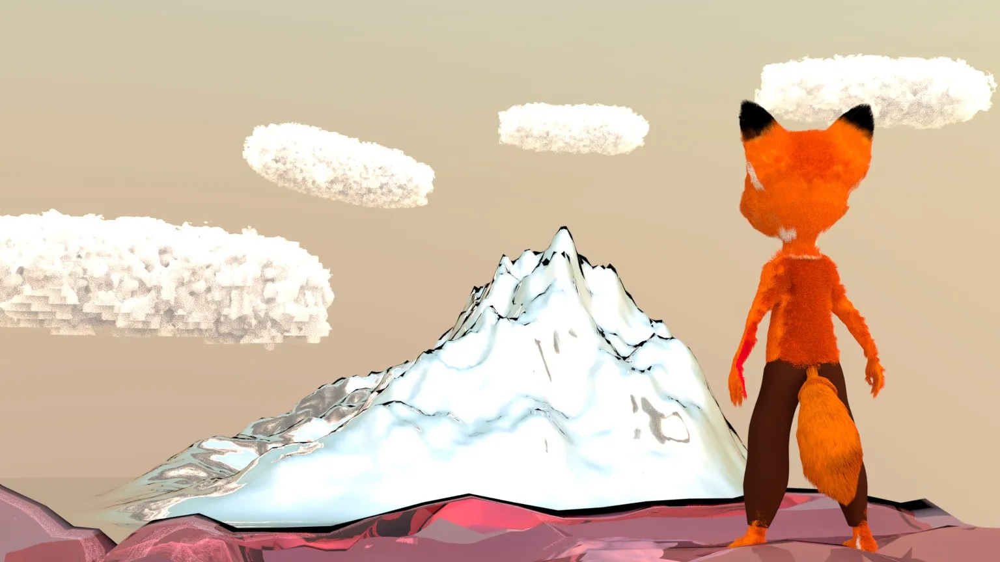 Première ébauche — Unai regardant l’horizonLes quatre premiers épisodes de Unai ont été écrits de manière procédurales. J’ai juste fait les scènes les une après les autres, sans savoir à quel moment j’allais finir l’histoire.
Comme je le disais précédemment, l’un de mes objectifs était de faire une chronique jeu vidéo. Mais alors que je m’approchais de la fin de chacun des épisode, j’étais embêté par le fait de parler de quelque chose sans être légitime. Je savais que je n’avais pas assez de vécu pour pouvoir évoquer l’histoire du jeu vidéo.
C’est pourquoi UNAI est devenu une web série. Sans jamais prononcer le mot “jeu vidéo”.
L’histoire du premier épisode raconte comment une créature se moque de son créateur d’une part, et d’autre part se veut un appel au voyage.
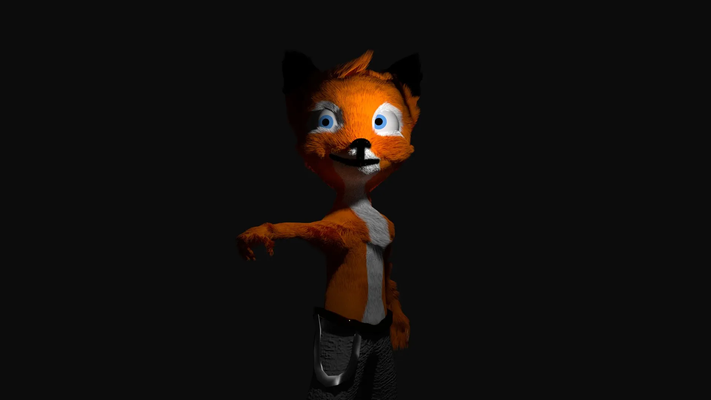 Unai dans le premier épisodeL’épisode 2, quant-à lui, se veut plus sombre. On y voit Keeper protéger Unai. Ma volonté était d’y installer une sorte de tension, même si le fond vert approximatif nous sort une fois de plus de l’immersion.
Dans UNAI #03, Unai montre ses talents de pilote à Keeper. Je voulais montrer la fierté de Keeper envers Unai, et présenter pour la première fois l’interieur du cockpit du vaisseau.
Dans l’épisode quatre, je voulais juste souligner le sentiment de solitude des deux personnages. Mais aussi présenter un début de confrontation: Unai grandit, et montre un caractère rebelle.
Du coup, je profitais des épisodes pour développer l’univers visuel. L’idée était alors de parler de la relation entre Unai et Keeper, en installant l’idée que Keeper protège son petit frère. Et Unai, lui semble avoir peur de Keeper dans l’épisode 2, puis être fier de lui présenter ses talents de pilote dans l’épisode 3. Dans l’épisode 4, qui est le plus court de tous, il exprime sa tristesse, et sa solitude. Keeper, lui justifie cette difficulté par le fait qu’il veuille le protéger.
L’idée est aussi de faire en sorte qu’à chaque épisode de UNAI, une émotion ressorte du visuel. Avec une colorimétrie propre. Et en analysant ces premiers épisodes, je ne peux m’empêcher de remarquer que les visuels sont de plus en plus sombres. Et l’univers de plus en plus triste.
Avec l’épisode 5, je fais un choix radical. Jusqu’à présent, le tout semblait plutôt sérieux. Mais j’ai envie de m’essayer à quelque chose de plus drôle. Et cette cinquième excursion dans UNAI va être un premier pas dans la comédie.
Jusqu’à présent, UNAI était voué à être une simple web série de science fiction cachée dans les entrailles de youtube. Cette aventure de Unai et Keeper renoue avec mes objectifs de départ: faire rire mon auditoire et faire une oeuvre burlesque.
Pour la première fois, un autre personnage que Unai et Keeper va enter en scène. Celui ci sera un antagoniste dont le design sera tout droit sorti du design des robots de Portal 2.
Autre révolution: l’épisode a été tourné en décor réel ! Tandis que l’ensemble des épisodes précédents avaient vu les plans de Keeper être tournés sur fond vert, celui-ci serait tourné en plein air.
Enfin, dernière révolution: le personnage de Unai lui-même. En effet, l’ensemble du squelette d’animation du personnage a été revu, avec un redesign au passage. Désormais, Unai n’est plus torse nu !
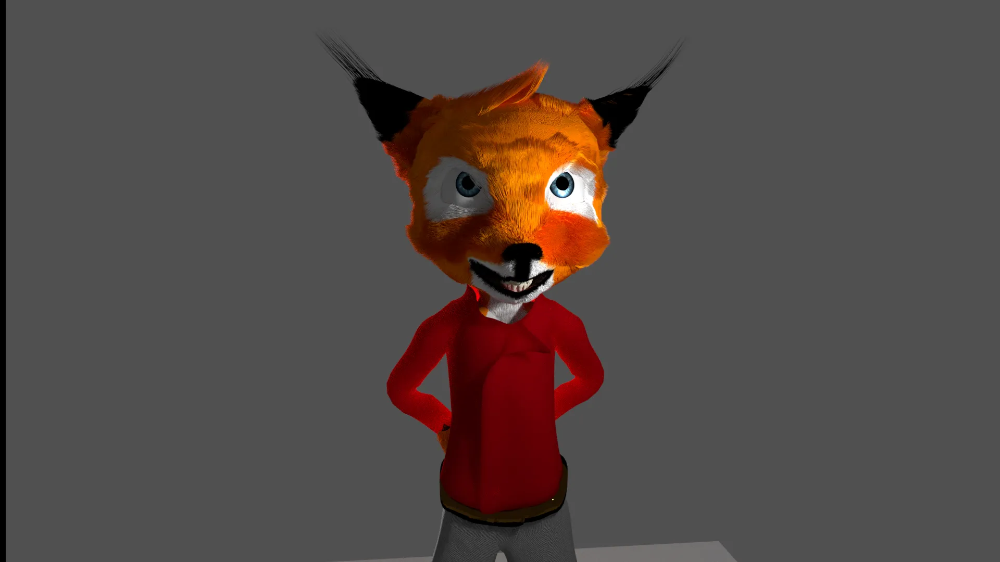 Unai version test avec rigg facial animé à la main 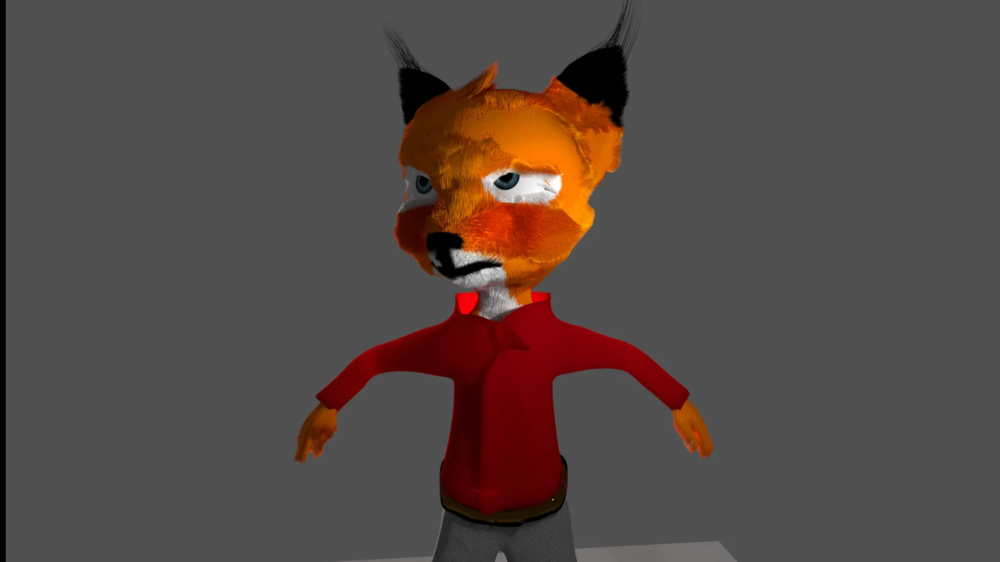 Unai avec test vêtement rouge 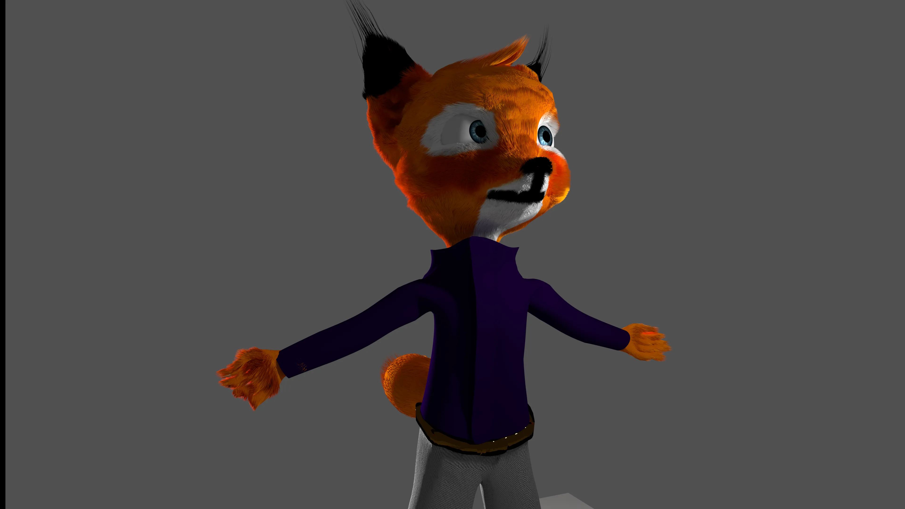 Unai avec test vêtement violetDe plus, son rig facial a été refait de manière à pouvoir intégrer un système de capture faciale, pour pouvoir animer le visage du renard de manière rapide en me filmant avec mon téléphone. Le tout est calculé pour que le faciès de Unai soit plus organique. Et en plus, je n’ai plus à animer chacune de ses interventions à la main !
Quand je vois l’évolution de mon travail, je me sens fier du travail accompli jusqu’à présent. A l’heure où j’écris ces lignes, l’épisode 6 est encore en cours de production. En levant les yeux, de temps en temps, je vois les visuels de UNAI qui prennent vie, frame après frame, scène après scène.
Je ne suis pas l’animateur le plus doué de ma génération, ni le gars le plus imaginatif qui soit. Mais créer UNAI me rend heureux.
Quand je vois Unai et Keeper discuter, c’est une partie de moi qui s’exprime. Et raconter leur histoire me fait le plus grand bien.
Leur prochaine aventure sera la plus ambitieuse à ce jour, et va complètement se reconnecter avec la fonction de base du projet: parler de jeu vidéo.
Oui, l’épisode 6 sera une chronique. Et sera un mêlange de fiction comme les épisodes précédent, mais aussi de chronique au format voix-off.
A chaque nouvelle image rendue, ma hâte de présenter l’épisode 6 grandit.
Unai et Keeper sont quelque part mes enfants. Je les ai créés et imaginés. Je les ai écrits et sculptés, modélisés et filmés.
Les voir s’animer à chaque épisode sous une nouvelle forme me rempli d’ivresse.
Pour moi, ces personnages sont l’image même de la liberté.
William-Arno CLEMENT